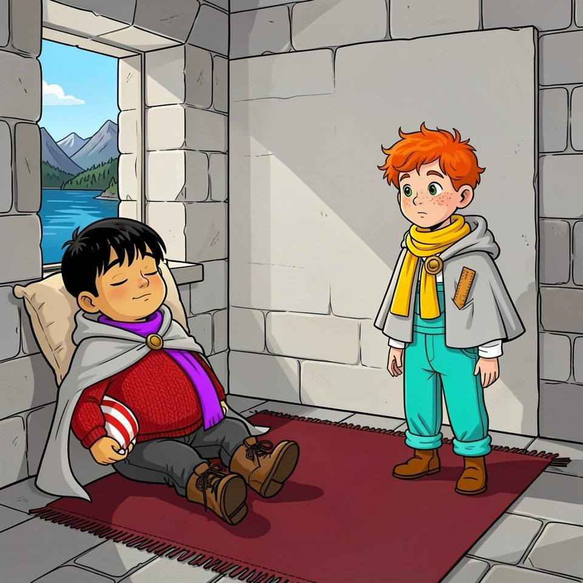

Titistoire › Les Galaxies (8-10 ans)
Deux jours impairs
Haute-Lanterne, épisode 5 sur 8 : un feuilleton à énigmes dans un vieux château-phare au milieu d'un lac.

▶ Écouter et regarder l'histoire
Gratuit, sans inscription : la voix lit, le texte suit mot à mot, les images tournent comme dans un album.
Le texte de l'histoire
Le vingt-quatre, Tom arriva au thé avant tout le monde, ce qui ne prouvait rien : il était du Levant. Mais il arriva en courant. Depuis la veille, les six de la carte savaient comment on rallume la Grande Lanterne. Il y fallait une toute petite lanterne, deux voix, et une chambre à deux fenêtres dont personne ne connaissait la porte.
« Je les ai ! Deux portes exactement pareilles. Une à chaque bout du couloir des jours impairs. Même hauteur, même largeur, même bois. J'ai mesuré. Et entre les deux, vingt-six pas de tenture bleue. — Donc la troisième porte est dans le couloir, conclut Kenza. Allons-y. — Impossible. Nous sommes le vingt-quatre. »
On y alla tout de même, pour le principe. À l'étage, il y avait un mur, solide, poli et parfaitement indifférent. Elias le toisa. Kenza lui ordonna de s'ouvrir. Maya lui raconta une histoire. Le mur resta un mur. Sami s'assit contre lui, cala son coussin et ferma les yeux. « Je l'attends. Demain, je serai le premier. Tadam. »
Il tombait cette pluie fine qui a tout son temps. La journée fut très longue. Tom mesura le mur neuf fois. Elias rédigea un règlement de l'attente, en un seul article. Maya apprit à Nour à faire tenir une cuillère sur son nez, ce qui n'était pas poli du tout, et Nour rit. Personne, à Haute-Lanterne, ne l'avait encore entendue rire.
À l'heure du thé, Miss Ada fit tinter sa cuillère. « Un mot sur la cérémonie du premier. Vous l'avez tous vu : la Grande Lanterne baisse. Elle a trois cents ans, elle a bien servi, et il serait impoli de lui en demander davantage. » Six tasses restèrent en l'air, trois de chaque côté du Trait.
« J'ai donc commandé une lampe. Une lampe ordinaire. Elle s'allume quand on tourne un bouton, par tous les temps, et ne pose aucune question. Zora ira la chercher sur la rive, avec la barque de la fin du mois. Nous l'installerons le premier, au matin. — Elle s'allume même quand on ment ? demanda Maya. — Même alors. C'est son seul défaut. »
Nour leva la main. « Pardon, Miss Ada. Et si l'on rallumait la Grande ? — On a essayé, mon enfant. Maître Idris lui a dit des vérités trois nuits de suite. Je lui ai avoué des choses que je n'avais confiées à personne. Elle n'écoute plus. » Miss Ada reposa sa tasse. « Il faut bien que la barque trouve le rocher. »
Il n'y avait rien à répondre : elle avait raison, et c'était bien le plus ennuyeux. Les six se regardèrent par-dessus le Trait. Les maîtres avaient parlé à la Grande Lanterne ; aucun n'avait pensé à la petite. Fallait-il le leur dire ? Les six n'avaient encore ni chambre ni lanterne : rien qu'un dessin, dans un livre qui calait un pupitre.
Le vingt-cinq, la porte de bois était revenue, et Sami, fidèle au poste, dormait devant. Tom entra en comptant ses pas. Au treizième, juste au milieu, il s'arrêta. La tenture bleue était là comme ailleurs, fanée, immobile. Nour y posa la main, bien à plat. Sous l'étoffe, ce n'était pas de la pierre. C'était du bois.
On écarta la tenture. Derrière, il y avait une petite porte basse, sans poignée, sans serrure, sans rien. Elias poussa. Kenza poussa plus dignement. Tom chercha des gonds. « Imagine une porte sans serrure, raisonna Maya. C'est une porte qui s'ouvre autrement. Comme un livre. — Elle n'a pas de titre. — Le livre non plus. »
Elias et Kenza s'agenouillèrent devant la porte, chacun de son côté, de l'air de gens qu'on mène chez le dentiste. « À trois, proposa Tom. — Inutile. Nous savons faire. » Et ils chuchotèrent ensemble, du premier coup : « Dame Mira et Maître Tarek. » Elias ne s'étrangla presque pas. La porte tourna sans un bruit.
Ce fut l'odeur qui sortit d'abord : poussière, vieille encre et cuivre froid. Puis ils la virent. La chambre ronde. La table, couverte de parchemins roulés et de morceaux de lanternes. Deux tabourets, côte à côte. Et deux fenêtres étroites, sans vitres, l'une vers le levant, l'autre vers le couchant, leurs volets grands ouverts depuis trois cents ans.
Un petit vent courait d'une fenêtre à l'autre et soulevait la poussière. Tom éternua onze fois. « Je ne peux pas compter en éternuant. » Il ferma un volet, puis l'autre, et Maya alluma une lanterne d'un « Ça sent le vieux » parfaitement sincère. Alors Tom aperçut le mur du fond. Il resta un long moment sans rien dire.
Trois horloges. Trois vieilles horloges arrêtées, pendues côte à côte. « Quatre-vingt-dix-huit, compta-t-il d'une voix qui tremblait. Quatre-vingt-dix-neuf. Cent. » Il s'assit par terre. « Il y en a cent. Maître Idris avait raison. Je recomptais depuis deux ans. » Sami lui tapota l'épaule. C'était, pour Sami, un effort considérable.
Sur la table, entre un pot d'encre sèche et une pince, attendait la Première Lanterne. Elle était minuscule, de cuivre sombre, à peine plus grosse qu'une poire, et elle avait deux anses : une de chaque côté. Nul ne pouvait la porter seul sans avoir l'air de vouloir la garder. Les fondateurs y avaient pensé.
« Cette chambre est au Levant, déclara Elias. C'est la fenêtre qui décide, et voilà une fenêtre à l'est. — En voilà une à l'ouest. Elle est au Couchant depuis trois cents ans. — Elle a deux fenêtres, fit observer Tom. — Alors il faudra la partager », conclurent-ils ensemble, du ton dont on annonce une mauvaise nouvelle.
Le soir venait. Derrière le volet du couchant, on entendait la pluie. « Essayons, décida Kenza. Deux voix. » Elle prit une anse, Elias l'autre. « Il faut dire la même chose, rappela Nour. Et que ce soit vrai pour vous deux. » Les chefs se regardèrent. Dire la même chose : en trois cents ans, cela ne s'était pas produit.
« Le Levant est la meilleure aile, proposa Elias. — Je ne peux pas dire cela. — Le Couchant est la meilleure aile ? — Tu ne peux pas le dire non plus. — Kenza est têtue. — Elias est têtu. — Ce n'est pas la même phrase », soupira Tom. Ils cherchèrent longtemps une chose, une seule, que l'un et l'autre tenaient pour vraie. C'était désolant.
« Il pleut », suggéra Sami, de sous la table. Les deux chefs tendirent l'oreille. Il pleuvait. On ne pouvait pas le nier, ni d'un côté ni de l'autre. « Il pleut », prononcèrent-ils ensemble. Dans la Première Lanterne, quelque chose s'alluma. C'était une flamme grosse comme une lentille. Elle brilla le temps de compter jusqu'à vingt, et s'éteignit.
« Vingt secondes, annonça Tom. Pour une vérité sur la pluie. — Une petite vérité, une petite flamme, traduisit Maya. — Et il faut qu'elle tienne du couchant au levant. » Toute une nuit. Il leur faudrait donc une vérité beaucoup plus grande. Mais Tom, déjà, fronçait le nez. Il venait de trouver un ennui bien pire.
« Du couchant au levant, dit Tom, il y a minuit au milieu. Et à minuit, si le lendemain est un jour pair, il n'y a plus de couloir. Plus de porte. On se réveille dans son lit. » Chacun regarda ses chaussures. « La flamme resterait seule. Et au matin, la chambre ne serait même pas là pour recevoir le soleil. »
« Il faudrait deux jours impairs de suite, poursuivit-il. Et cela n'existe pas. Un impair, un pair, un impair, un pair. J'ai vérifié jusqu'à mille. » Il avait l'air si malheureux que Sami lui tendit son coussin. Jusqu'ici, les nombres n'avaient jamais trahi Tom. Kenza elle-même ne trouva rien de grand à dire.
Elias tournait son crayon entre ses doigts. « Après le trente, il y a le trente et un. — Oui. — Et après le trente et un ? — Trente-deux, répondit Tom, accablé. Pair. — Non. Après le trente et un, il n'y a pas de trente-deux. Le mois est fini. On recommence. » Il releva la tête, très lentement. « Règle numéro un. »
« Le premier ! cria Tom. Le premier du mois ! Trente et un, impair. Un, impair ! » Il recompta sur ses doigts, par acquit de conscience. Elias rosissait. Toute l'école riait de ses règles, qui portaient toutes le numéro un. Et voilà : quand les nombres arrivent au bout, ils recommencent à un. Il l'avait toujours su.
Encore fallait-il que ce mois-ci aille jusqu'à trente et un. Tous ne le font pas. On dévala l'escalier jusqu'à la remise aux barques, où Zora tenait son calendrier : une planche, des cases, une croix de craie par jour passé. Tom compta les cases du mois. Il y en avait trente et une. Dans la dernière, Zora avait dessiné une petite barque.
« La barque de la fin du mois, comprit Nour. Elle part le trente et un pour la rive, et revient le premier au matin, avec la lampe. — Et dans la nuit entre les deux, reprit Tom, le couloir reste. La chambre reste. C'est la seule nuit du mois où l'on peut veiller une flamme d'un soleil à l'autre. »
« C'est aussi la nuit du dernier cran, ajouta Kenza. Celle où la Grande Lanterne s'éteint. » Elle resta un instant sans parler. « Ce n'est pas un hasard. Les fondateurs l'ont allumée cette nuit-là, il y a trois cents ans : c'était déjà la seule nuit possible. Elle a brûlé trois cents ans, jour pour jour. »
Zora entra, secoua son chapeau, et trouva six élèves devant son calendrier. « Vous attendez la barque ? Elle part dans six jours. — Nous comptions les cases, madame. — Trente et une. Je les ai tracées moi-même. » Elle raccrocha la planche un peu plus haut. « Si quelqu'un a encore faim de calcul, il y a les rames à vernir. »
Ils remontèrent sans se presser. Ils avaient la chambre, la lanterne, la nuit. Il leur manquait la flamme : une vérité assez grande pour brûler d'un soleil à l'autre, et qu'un Levant et un Couchant puissent dire d'une seule voix. « Il pleut » avait tenu vingt secondes.
« Il nous reste six jours pour la trouver, calcula Tom. — Le Levant la trouvera, promit Elias. — Le Couchant l'a peut-être déjà », laissa tomber Kenza. Ils se séparèrent au Trait, comme tous les soirs. Maya fut la seule à remarquer qu'ils s'étaient dit bonsoir. Nul autre ne s'en aperçut, pas même eux.
Quelle vérité deux ailes fâchées depuis trois cents ans peuvent-elles dire ensemble, sans que la flamme tremble ? Ce soir-là, Tom s'endormit en comptant jusqu'à cent, pour le plaisir. Dans la salle des Horloges, l'horloge de personne avança d'un cran. Il en restait six.
Épisode suivant : La lanterne qui pâlit